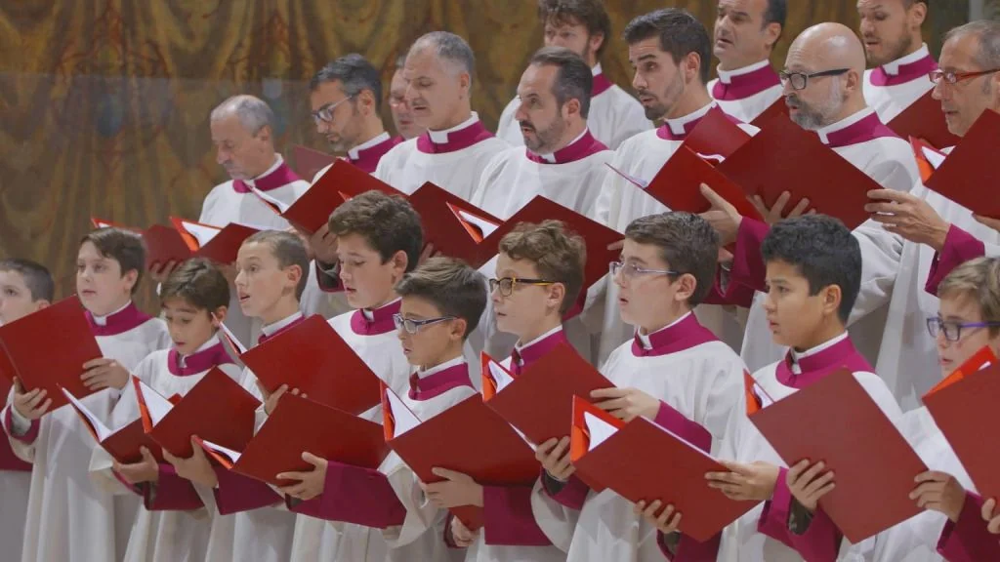

Vie de Paroisse
Notre Sanctuaire & Mission Spirituelle
Un lieu d'accueil, d'écoute et de prière où chaque fidèle trouve réconfort, paix intérieure et croissance dans la foi auprès de la communauté.
 LITURGIE
LITURGIE
Célébrations & Sacrements
Participez à la sainte Eucharistie, au baptême, à la confirmation et au sacrement de réconciliation pour nourrir votre âme au quotidien.

ADORATIONPrière & Contemplation
Nos chapelles d'adoration eucharistique vous accueillent chaque jour pour des moments de silence céleste et de médiation profonde.
 JEUNESSE
JEUNESSE
Catéchèse & Éducation
Éveil à la foi pour les tout-petits, préparation à la première communion et accompagnement spirituel de la jeunesse.